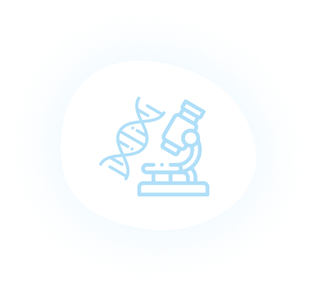

愛するペットの
唯一無二の情報を残す
遺伝情報（DNA）はそれぞれのペット固有のもので、一つとして同じものはありません。
この世に唯一の、愛おしい存在の情報そのものです。
でも残念ながらDNAは、遺骨や遺灰になった後で採取することが出来ません。 いのちの情報のかたみは、命あるうちに残すことが必要なのです。
ご利用の流れ

1

Web申込
DNAサンプルの
採取方法を
お選びいただきます。
2
提携病院 /
かかりつけ医
にてサンプルを採取
担当獣医師から
採取を行います。
採取可能なDNAサンプル
血液、口腔粘膜
2
ご自宅で
サンプルを
採取
採取キットを
お届けします。
添付マニュアル
通りに採取し、
指定ラボへ
ご送付ください。
採取可能なDNAサンプル
口腔粘膜、爪
3
ラボで技術者が、
サンプルから
DNAの抽出・保管を実行
4
DNA抽出証明書
を送付


DNAサンプル詳細
| サンプル種類 | 採取方法 | 採取量 |
|---|---|---|
| 血液 | 提携病院 | 200~250μl |
| 口腔粘膜 | 提携病院、ご自宅 | 頬の内側1分程 弊社専用キットで採取 |
| 爪 | ご自宅 | 5枚（0.5g） |
DNAの抽出

サンプルを受取

DNA抽出、濃度確認
ディープフリーザーで管理

災害に備え、バックアップ電源をご用意
料金
初期費用
12,000円
保管料
1チューブ
1,000円
2チューブ
800円
1サンプルの料金
3チューブ以上
600円
1サンプルの料金
DNAをカタチで残す

クリスタルアートリウム
圧倒的な透明感と高い光の屈折率よって美しいきらめきを放つ。クリスタルアートリウム™の中に、愛する存在のDNA溶液入りチューブが植物と美しく浮かぶ、世界に一つだけしかないオブジェです。
CAMPFIREで購入
Coming
soon
DNA導入植物Yuishu
世界初。唯一無二。旅立ってしまったペットのDNAを導入した植物(種)を提供。あの子の情報を持った生命。水をあげることで、芽が出て花を咲かせる。同じ部屋で呼吸をする。これまでになかった、温かみのある供養体験を提供。クローンとは異なる「おかえり。」を創出。